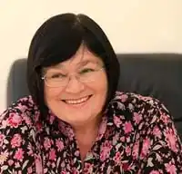
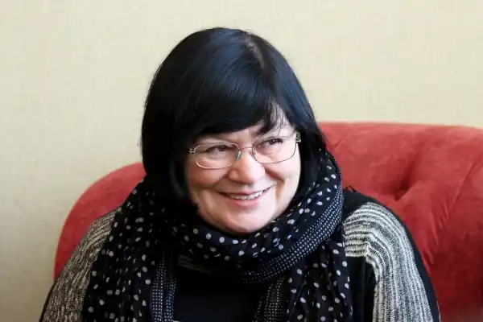
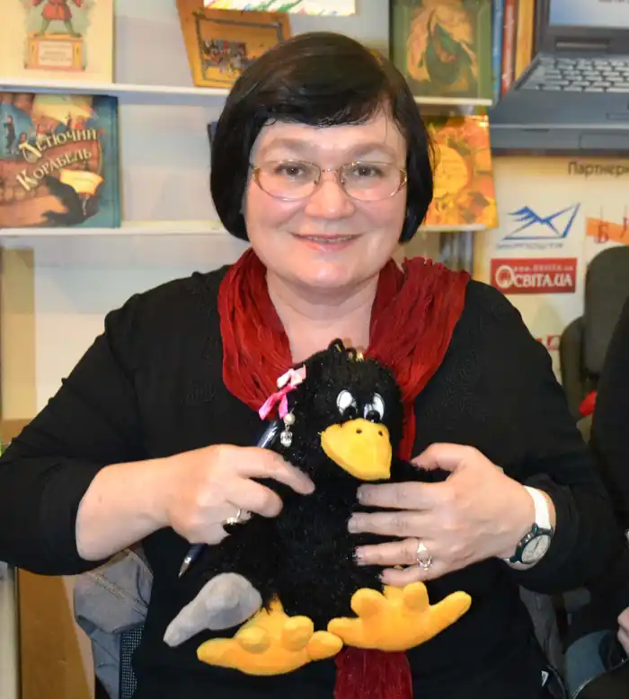

Леся Анастасіївна Вороніна народилася 21 березня 1955 року в Києві. У 1979 році закінчила філологічний факультет Київського університету (заочний відділ). За роки навчання встигла попрацювати кур’єром у Спілці письменників України, лаборантом у школі, електромонтером на деревообробному комбінаті, екскурсоводом у Музеї народної архітектури та побуту в Пирогові та на багатьох інших роботах. Подорожувала Україною автостопом та Польщею на байдарках. Дружина Євгена Гуцала. З 1987 до 1991 року — редактор відділу літератури та мистецтва журналу "Україна". З 1991 року працює у дитячому журналі "Соняшник". Перекладає з польської мови (твори Станіслава Лема, Славоміра Мрожека, Анни Ковальської, Анни Карвінської, Гелени Бехлерової та ін.) Нині — ведуча програм на Радіо Культура. На початку 2011 року очолила щойно створене дитяче видавництво "Прудкий равлик". Під псевдонімом Гаврило Ґава написала понад сто сюжетів коміксів, що впродовж 13 років з’являлися на сторінках журналу "Соняшник".
Твори:
Суперагент 000 (1996) — дитячий детектив Суперагент 000. Нові пригоди (2000) — дитячий детектив Таємниця смарагдового дракона (2001) — дитячий детектив Суперагент 000. Таємниця золотого кенгуру Таємниця пурпурової планети Таємне товариство боягузів Прибулець з країни Нямликів Нямлик і балакуча квіточка Хлюсь та інші Суперагент 000. У пащі крокодила Сни Ганса Християна "Пригоди голубого папуги", "Таємниця Чорного озера".